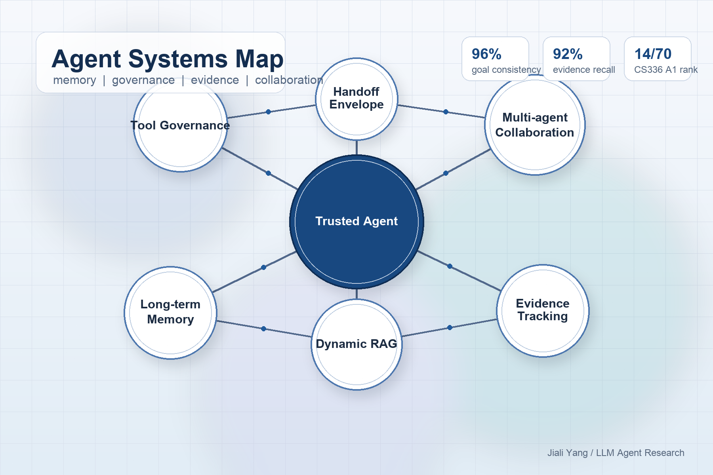

Trusted Agent Systems
面向工具调用、权限控制、执行轨迹和隐私风险，构建更可审计的自主智能体运行机制。
ECNU CS Honors Undergraduate · Class of 2027
我关注可信智能体、多智能体协作、知识增强与长程推理，也喜欢把模型能力落到可审计、可复现、可运行的系统里。

计算机科学拔尖班 · 本科 · 2023.09 - 2027.06
研究兴趣聚焦可信智能体与多智能体协作、知识增强与长程推理、模型可靠性评测及高效推理系统；关注复杂任务中的工具调用治理、执行轨迹审计与长期记忆机制。
我更关心 Agent 在长程任务中的可控性、边界、记忆和责任归因：它如何调用工具，如何协作，如何保留证据，又如何在多轮交互后仍保持目标一致。
面向工具调用、权限控制、执行轨迹和隐私风险，构建更可审计的自主智能体运行机制。
研究 Agent 间的关系建模、任务交接和责任边界，让多智能体协作从自然语言约定走向结构化协议。
结合 Dynamic RAG、证据追踪和双轨记忆，提升长程交互里的论据召回、上下文连贯性和事实可靠性。
从训练、推理、数据过滤和并行机制理解大模型系统瓶颈，关注可复现实验流水线与高效算子实现。
先放简历中的主线经历，后续可以继续补论文、仓库、demo 或项目截图。
扩展 Clawith 多 Agent 协作关系建模能力，设计结构化 handoff envelope，优化自主运行场景下的工具权限治理，并评测 Honcho 与 TencentDB Agent Memory 两类长期记忆方案。
构建多轮辩论 Agent 原型，设计立场漂移检测、论据溯源与阶段化攻防策略；构建约 3 万条专项指令数据集并进行三阶段 LoRA 微调。
参与提出“全局轻量净化 + 局部高强度修复”的两阶段扩散去毒框架，主导设计基于 SSIM 结构相似性的触发器定位算法。
这里先按简历建立项目卡片，等你把具体项目资料发来后，我会补充截图、链接、技术亮点和结果展示。
独立实现 BPE、Transformer Decoder、训练循环、采样生成与评估模块，完成从数据处理到预训练和推理评测的 LLM 系统闭环。
参与构建图像生成、轨迹规划、实时通信与机械臂控制链路，负责 EtherCAT 协议栈在 SylixOS 上的移植与驱动适配。
参与构建以 LLM 为核心的自主渗透 Agent Harness，整理漏洞知识库、工具调用规范与阶段性结果校验流程。
面向企业 BI 场景构建 instruction tuning 数据工程流程，设计 Planner、Generator、Critic、Verifier 与 Refiner 五阶段质量控制。
RAG / Agent 架构 / 模型可靠性评测 / 长程交互 / 实验设计 / 专利材料撰写
Python / PyTorch / Transformers / PEFT / Docker / Linux / 自动化评测 / 数据清洗
操作系统 / 计算机网络 / 数据库 / 编译原理 / FlashAttention / 张量并行 / RTOS 驱动适配
目前主页是 v1 骨架版，后续会继续补充项目详情、截图、论文或代码链接。